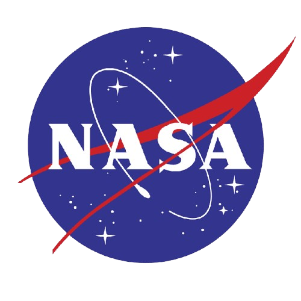

Seguimiento de Eventos Climáticos Extremos
Bienvenido a nuestra página Web donde podrás saber si está ocurriendo algún desastre natural cerca de ti.
Filtrar por fecha
Fecha de inicio:
Fecha de fin:
Aplicar Filtro
Cancelar Filtro
Mostrar:
Volcanes
Tormentas
Icebergs
Incendios
Detalles del Evento
Mapa 2D